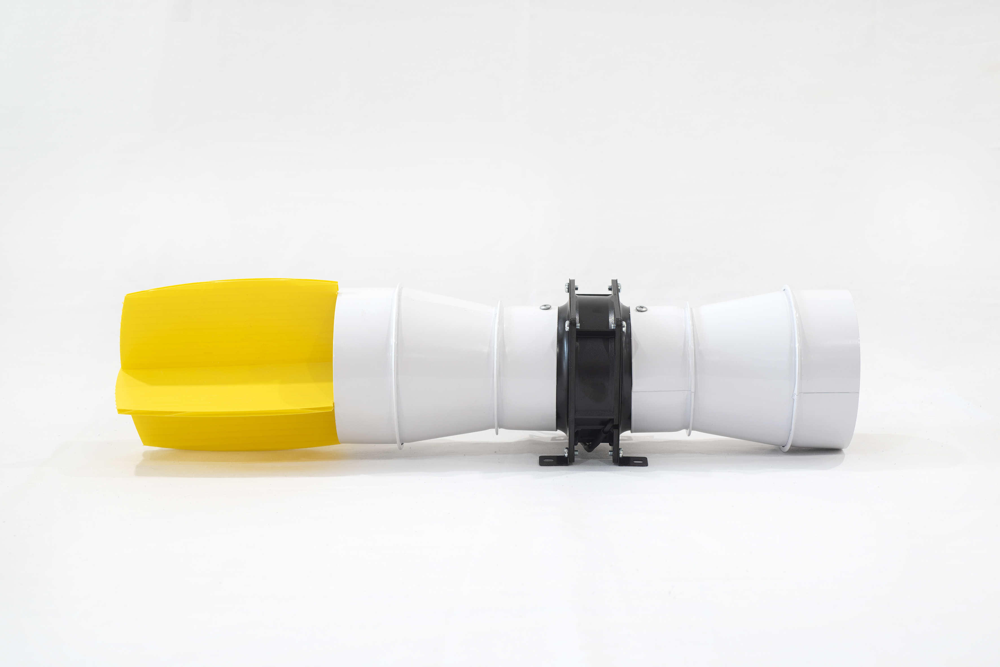
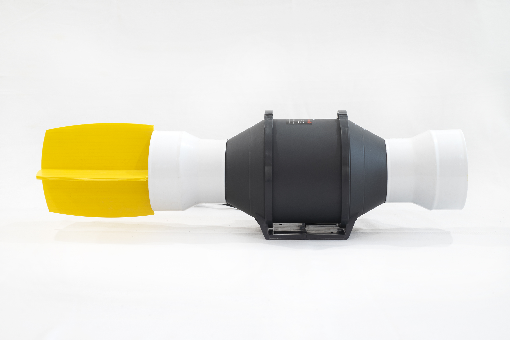

About The AirCat
The AirCat is the result of 10 years of testing and development.
AirCat kills organics such as:
● Airborne mould spores
● Bacteria
● Viruses
● Small flying pests e.g white flies
Good air circulation will help the air get to the AirCat making it more effective. To assist in controlling pests such as white flies disturbing the plants will make them fly and they then fly towards the yellow attractant, where they’re then drawn into the AirCat and killed.
The results of AirCat are:
● Reduced organic odours
● Recuded spread of mould, diseases, and flying pests
● Helps to reduce / prevent white fly infestations
● Decomposing organics increases CO2 slightly which is available to plants
● Decomposing organics increases CO2 slightly which is available to plants
● Helps to increase the usable life span of carbon filters
NB: The AirCat is NOT a CO2 generator, this is a happy side effect of the cleaning process
The AirCat is self cleaning requiring no maintenance.
The AirCat can be mounted anywhere in the room, hanging amongst the plants will make the yellow attractant easier for flying pests to see but good results have been found with mounting near the pots and even on the floor. Caution must be taken to make sure the fan does not get wet as it is electrical.
The active compound will break down complex compounds into their simpler elements, it will not add anything to the air that isn’t already there.
The AirCat does not produce negative Ions or Ozone.
There are currently 2 models:
Model 1 will cover do 3 cubic meters (1.2 x 1.2 x 2.0) 
Model 2 will cover 6 cubic meters (2.4 x 1.2 x 2.0) 